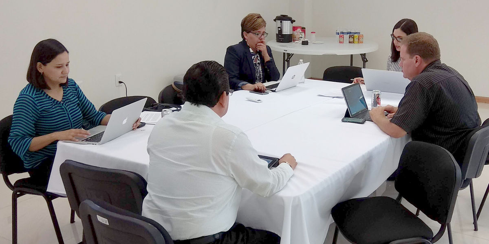

Cuarta Sesión Extraordinaria 2018 de la Comisión Ejecutiva
SEA Coahuila - 20 junio 2018
Comisión Ejecutiva del Sistema Anticorrupción del Estado de Coahuila de Zaragoza.
Se reunieron los integrantes de la Comisión Ejecutiva, Marcela Castañeda Secretaria Técnica de la Secretaría Ejecutiva del Sistema Anticorrupción del Estado de Coahuila, Lourdes de Koster, Juan Adolfo Von Bertrab, Carlos Rangel y Ana Yuri Solís, Consejeros de Participación Ciudadana del SEA.
Como primer punto del orden del día, la Consejera Solís, expuso las facultades, atribuciones y alcances de la Comisión Ejecutiva, con el objetivo de dar un rumbo claro y certero a las actividades que se realizan.
Otros temas de la reunión, fueron exponer los avances de los proyectos en materia anticorrupción, que desarrolla que cada uno de los integrantes de la Comisión, así como, analizar la metodología de la política anticorrupción del Estado de Coahuila. Esta última fue aprobada por todos los integrantes, misma que, por conducto de la Secretaría Técnica, será una propuesta para que sea analizada por el Comité Coordinador del Sistema.
En asuntos generales, se trataron los temas vistos en la Reunión de Consejeros de los Sistemas Locales Anticorrupción del país, entre ellos, los acuerdos de las siguientes mesas de trabajo: Indicadores y metodologías de mapas de riesgos, plataforma digital nacional, servicio profesional de carrera, vinculación con municipios, comunicación, y asuntos jurídicos.
